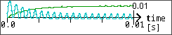
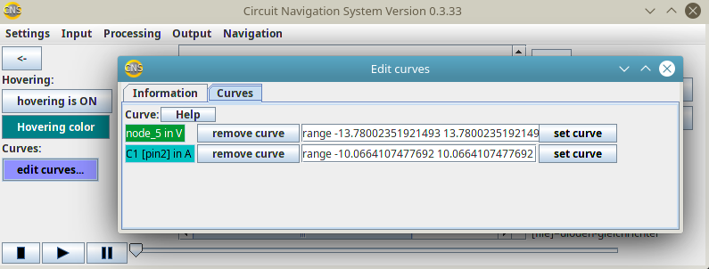

Curves
Intro
The Animated CAD allows the user to add curves over the time line below the schematic.
For example, the following image shows some current waves in light blue, and a loading curve which starts at 0V and ends at ca.9.3V in green:

How to add curves
You can add graphs AFTER making an analysis. Because to show some curves, the AniCAD needs values. And these values are calculated or measured in the analysis.
To add a voltage curve:
1:Click on a wire in the schematic.
Then the panel at the right side of the main window expands and shows you some information about the wire. There are also some buttons in that panel.
2: Click on the button named "add/remove graph".
Then the curve which represents the voltage at that wire(1) is added.
To add a current curve:
1: Click on a component in the schematic.
Then the panel at the right side of the main window expands and shows you some information about the component.
2: Click on the button named "[pinname] add/remove graph".
Then the curve which represents the current through that component's pin is added.
The edit dialog
In order to open the edit dialog:
1: Open the edit-dialog. You can find it on the left side of the main window
2: select the "curves"-tab. You now should see a window as this:

How to edit a curve
You can edit the form of a curve by:
1: change the text in the field shown above. Therefor you should use one of the functions below.
2: click the set-button.
Functions
Functions are used in the textfields to specify the curves, and for editing drawing parameters. They must be of one of the following forms:
range min max, where min and max are values, shows the value which are between [min] and [max]. This form is chosen by default for new curves, as shown in the image above.
poly c0 c1 c2 ... cn where c0 to cn are values, shows a polynomial form of the function: The y-value is the distance of the curve to the zero-line in pixels. It depends of the x-value, which is the voltage or current value in Volt or Ampere: y=f(x)=c0+c1·x+c2·x2+...+cn·xn
You can choose as many parameters as you like, so you can choose n. But the most used form of poly is n=1, which is a linear function. For example, poly 0.0 0.5 shows 0.5 pixel per volt or per ampere. (So the first visible increase is at 1 pixel, which is the equivalent of 2volt or 2ampere.)
step x0 y0 x1 y1 x2 y2 ... xn yn makes a step function with the steps specified by the pairs xi yi i={0;1;2;...;n}. Can be used to make discrete functions, e.g. for digital electonics. Also, the pairs xi yi can be combined in brackets. For example,
step (1|-20) (3|-10) (5|0) (7|10) (9|20) is accepted too, and will modify the green curve above as in the following image:
 (3|-10) (5|0) (7|10) (9|20)
So in this image, the voltages, which start at 0V and end at ca.9,3V are put into six categories:
0V - 0,999 V at 25 pixel below the zero line (-25 pixel is the lowest value, because here it is the lower end of the window)
1V - 2,999 V at 20 pixel below the zero line
3V - 4,999 V at 10 pixel below the zero line
5V - 6,999 V on the zero line
7V - 8,999 V at 10 pixel above the zero line
9V - infinity V at 20pixel above the zero line")
lin x0 y0 x1 y1 x2 y2 ... xn yn similar to step, but makes a linear interpolation between the given points
log (base) (factor) (offset) where (base) (factor) and (offset) are optional parameters, specifies the y- distance to the zero-line as y=f(x)=factor·logbase(x)+offset.
If base is not given, then it is set to 10 by default. (2)
If factor is not given, then it is set to 1 by default.
If offset is not given, then it is set to 0 by default.
ln (factor) (offset) similar to log, but the base is the euler-constant e=ca.2,718.
const n where n is a value, returns a constant value y=n, which is independent from x.
Footnotes
(1) To be more precise: The voltage of the node, which contains that wire, is displayed. The voltage is the difference between that node's electric potential and the ground potential in Volt. That's why you can not make a curve of the voltage of a wire, which is connected to the ground connection: By definition, that curve would be a horizontal line at the value zero.
(2) Using a base other than 10 or euler in this log-function relies on the division of two logarithms, and therefor is less precise than these two standard base functions when calculated by a computer.